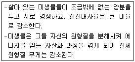
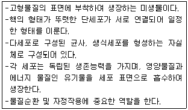
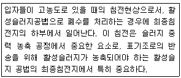
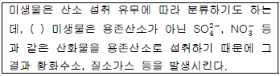
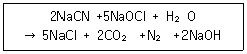
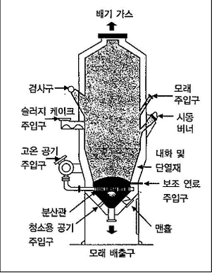
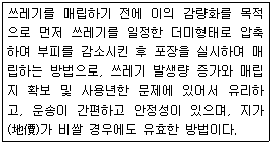
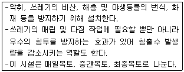
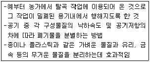
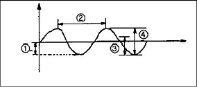

환경기능사 (2012-04-08 기출문제)
1과목: 대기오염방지
1. 중력식 집진장치의 효율 향상 조건으로 거리가 먼 것은?
- 침강실의 입구폭이 작을수록 미세한 입자가 포집된다.
- 침강실 내의 처리가스 속도가 작을수록 미립자가 포집된다.
- 다단일 경우는 단수가 증가할수록 압력손실은 커지지만 효율은 향상된다.
- 침강실의 높이가 낮고, 길이가 길수록 집진율이 높아진다.
(정답률: 64%)

2. 중량비로 수소가 15%, 수분이 1% 함유되어 있는 액체 연료의 저위발열량은 12184 kcal/kg이다. 이 연료의 고위발열량은 얼마인가?
- 11368 kcal/kg
- 12000 kcal/kg
- 13000 kcal/kg
- 13503 kcal/kg
(정답률: 60%)
3. 연료가 완전연소 되기 위한 조건으로 옳지 않은 것은?
- 연소온도를 낮게 유지하여야 한다.
- 공기와 연료의 혼합이 잘 되어야 한다.
- 공기(산소)의 공급이 충분하여야 한다.
- 연소를 위한 체류시간이 충분하여야 한다.
(정답률: 89%)
4. 일반적으로 광원으로부터 나오는 빛을 단색화장치 또는 필터에 의하여 좁은 파장범위의 빛만을 선택하여 액층을 통과시킨 다음 광전측광으로 하여 목적성분의 농도를 정량하는 분석방법은?
- 가스크로마토그래피법
- 흡광광도법
- 원자흡광광도법
- 비분산 적외선분석법
(정답률: 67%)
5. 촉매산화법으로 악취물질을 함유한 가스를 산화, 분해하여 처리하고자 할 때, 다음 중 가장 적합한 연소 온도 범위는?
- 100 ~ 150 ℃
- 250 ~ 450 ℃
- 650 ~ 800 ℃
- 850 ~ 1000 ℃
(정답률: 63%)
6. 2 Sm3의 기체연료를 연소시키는 데 필요한 이론 공기량은 18 Sm3이고 실제 사용한 공기량은 21.6 Sm3이다. 이 때의 공기비는?
- 0.6
- 1.2
- 2.4
- 3.6
(정답률: 60%)
7. A집진장치의 압력손실이 250mmH 0이고, 처리가스량이 6000m3/hr 일 때 소요동력을 구하면? (단, 송풍기 효율 : 65%, 여유율 : 20%)
- 6.12 kW
- 7.54 kW
- 8.45 kW
- 9.19 kW
(정답률: 52%)
8. 다음 중 건조대기 중에 가장 많은 비율로 존재하는 비활성 기체는?
- He
- Ne
- Ar
- Xe
(정답률: 86%)
9. 연료의 발열량에 관한 설명으로 옳지 않은 것은?
- 연료의 단위량(기체연료 1Sm3, 고체 및 액체연료 1kg)이 완전연소할 때 발생하는 열량(kcal)을 발열량이라 한다.
- 발열량은 열량계로 측정하여 구하거나 연료의 화학성분 분석결과를 이용하여 이론적으로 구할 수 있다.
- 저위발열량은 총발열량이라고도 하며 연료 중의 수분 및 연소에 의해 생성된 수분의 응축열을 포함한 열량이다.
- 실제 연소에 있어서는 연소 배출가스 중의 수분은 보통 수증기 형태로 배출되어 이용이 불가능하므로 발열량에서 응축열을 제외한 나머지 열량이 유효하게 이용된다.
(정답률: 72%)
10. 다음 중 런던형스모그에 해당하는 역전의 종류로 가장 적합한 것은?
- 침강성 역전
- 복사성 역전
- 전선성 역전
- 난류성 역전
(정답률: 71%)
11. 냉매, 세정제, 분사제, 발포제로 널리 사용되는 물질로 최근 성층권에서 오존 고갈현상으로 문제되는 물질은?
- 석면
- 염화불화탄소
- 염화수소
- 다이옥신
(정답률: 64%)
12. 세정집진장치의 입자 포집원리에 관한 설명으로 옳지 않은 것은?
- 미립자 확산에 의하여 액적과의 접촉을 쉽게 한다.
- 배기가스의 습도 감소로 인하여 입자가 응집하여 제거 효율이 증가한다.
- 액적에 입자가 충돌하여 부착한다.
- 입자를 핵으로 한 증기의 응결에 의하여 응집성을 증가시킨다.
(정답률: 70%)
13. 프로판 1Sm3을 이론적으로 완전연소 하는데 필요한 이론공기량(Sm3)은?
- 2/0.79
- 2/0.12
- 5/0.79
- 5/0.21
(정답률: 55%)
14. 대기조건 중 고도가 높아질수록 기온이 증가하여 수직온도차에 의한 혼합이 이루어지지 않는 상태는?
- 과단열상태
- 중립상태
- 기온역전상태
- 등온상태
(정답률: 76%)
15. 다음 연료 중 일반적으로 착화온도가 가장 높은 것은?
- 갈탄(건조)
- 무연탄
- 역청탄
- 목탄
(정답률: 77%)
2과목: 폐수처리
16. 1차 침전지의 깊이가 4m, 표면적 1m2에 대해 30m3/day으로 폐수가 유입된다. 이 때의 체류시간은?
- 2.3hr
- 3.2hr
- 5.5hr
- 6.1hr
(정답률: 62%)
17. 다음 중 생물학적 폐수처리 방법과 가장 거리가 먼 것은?
- 활성슬러지법
- 산화지법
- 부상분리법
- 살수여상법
(정답률: 45%)
18. 질소제거를 위한 고도처리 방법으로 거리가 먼 것은?
- 탈기
- A/0 공정
- 염소주입
- 선택적 이온 교환
(정답률: 62%)
19. 산성 과망간산칼륨 적정에 의한 화학적 산소요구량(CODMD) 시험방법에 관한 설명으로 옳지 않은 것은?
- 시료를 황산산성으로 하여 과망간산칼륨 일정과량을 넣고 30분간 수욕상에서 가열반응시킨다.
- 염소이온은 과망간산에 의해 정량적으로 산화되어 음의 오차를 유발하므로 황산칼륨을 첨가하여 염소이 온의 간섭을 제거한다.
- 가열과정에서 오차가 발생할 수 있으므로 물중탕의 온도와 가열시간을 잘 지켜야 한다.
- 아질산염은 아질산성 질소 1mg 당 1.1mg의 산소를 소모하여 COD값의 오차를 유발한다.
(정답률: 50%)
20. 다음 중 크롬함유 폐수처리 시 사용되는 크롬환원제에 해당하지 않는 것은?
- NH2SO4
- Na2SO3
- FeSO4
- SO2
(정답률: 54%)
21. 다음 중 활성슬러지공법으로 하수를 처리할 때 주로 사상성 미생물의 이상번식으로 2차 침전지에서 침전성이 불량한 슬러지가 침전되지 못하고 유출되는 현상을 의미하는 것은?
- 슬러지 벌킹
- 슬러지 시딩
- 연못화
- 역세
(정답률: 82%)
22. 포기조에서 1L 용량의 메스실린더에 시료를 채취하여 30분간 침강시켰더니 슬러지 부피가 150mL 가 되었다. 포기조의 MLSS가 2500mg/L 이었다면 이 때 SVI는?
- 210
- 180
- 120
- 60
(정답률: 34%)
23. 미생물 성장곡선에서 <보기>와 같은 특성을 보이는 단계는?

- 지체기
- 대수성장기
- 감소성장기
- 내생호흡기
(정답률: 61%)
24. 성층이 형성될 경우 수면부근에서부터 하부로 내려갈수록 형성된 층의 구분으로 옳은 것은?
- 표수층 → 수온약층 → 심수층
- 심수층 → 수온약층 → 표수층
- 수온약층 → 심수층 → 표수층
- 수온약층 → 표수층 → 심수층
(정답률: 78%)
25. 생태계의 생물적 요소 중 유기물을 스스로 합성할 수 없으며, 생산자나 소비자의 생체, 사체와 배출물을 에너지원으로 하여 무기물을 생성하고 용존산소를 소비하는 분해자로, 일반적으로 유기물과 영양물질이 풍부한 환경에서 잘 자라며, 물질순환과 자정작용에 중요한 역할을 하는 종으로 가장 적합한 것은?
- 조류
- 호기성 독립 영양 세균
- 호기성 종속 영양 세균
- 혐기성 종속 영양 세균
(정답률: 65%)
26. 아래 설명에 해당하는 생물적 요소로 가장 적합한 것은?

- 곰팡이
- 바이러스
- 원생동물
- 수서곤충
(정답률: 79%)
27. 다음 침전에 해당하는 것은?

- 독립침전
- 압축침전
- 지역침전
- 응집침전
(정답률: 52%)
28. 용존산소와 관련하여 폐수처리 시 이용되는 미생물의 구분 중 다음 ( )안에 가장 적합한 것은?

- 질산성
- 호기성
- 혐기성
- 통기성
(정답률: 74%)
29. 부영양화의 원인물질 또는 영향물질의 양을 측정하는 정량적 평가방법으로 가장 거리가 먼 것은?
- 경도 측정
- 투명도 측정
- 영양염류 농도 측정
- 클로로필-a 농도 측정
(정답률: 56%)
30. 0.001N-NaOH 용액의 농도를 ppm으로 옳게 나타낸 것은?
- 40
- 400
- 4000
- 40000
(정답률: 39%)
31. 다음 중 표준대기압(1atm)이 아닌 것은?
- 1013 N/m2
- 14.7 psi
- 10.33 mH2O
- 760 mmHg
(정답률: 70%)
32. 침전지에서 입자가 100% 제거되기 위해 요구되는 침전속도를 의미하는 것으로 침전지에 유입되는 유량을 침전지 표면적으로 나눈 값으로 표현되는 것은?
- 레이놀즈 속도
- 표면 부하율
- 한계 속도
- 헤젠 상수
(정답률: 58%)
33. 시안 농도(CN-) 100mg/L 인 폐수 15m3를 처리하는데 필요한 차아염소산나트륨(Na0CI)의 이론량은 얼마인가? (단, Na9CI의 분자량은 74.5, 시안 함유폐수는 다음반응식과 같이 염소화합물로 시안을 산화분해하여 처리한다.)

- 7.1kg
- 8.4kg
- 9.1kg
- 10.7kg
(정답률: 31%)
34. 부유물질(Suspended Solids)에 관한 설명으로 옳지 않은 것은?
- 부유물질은 물에 녹는 고형물질로서 유리섬유 거름종이(GF/C)를 통과하는 고형물질의 양을 mg/L로 표시한다.
- 부유물질의 농도는 하.폐수의 특성이나 처리장의 처리 효율을 평가하는데 이용된다.
- 침강성 고형물질은 하수처리장의 1차 침전지에서 침강에 필요한 유속을 결정하는 기초자료가 된다.
- 부유물질이 많을 경우에는 물 속 어류의 아가미에 부착되어 어류를 질식시키는 원인이 된다.
(정답률: 57%)
35. 소도시에서 발생하는 하수를 산화지로 처리하고자 한다. 유입 BOD 농도가 200g/m3이고, 유량이 6000m3/day이며,BOD 부하량이 300kg/ha . day라면 필요한 산화지의 면적은 몇 Ha 인가?
- 1ha
- 2ha
- 3ha
- 4ha
(정답률: 47%)
3과목: 폐기물처리
36. 다음 중 폐기물의 선별목적으로 가장 적합한 것은?
- 폐기물의 부피 감소
- 폐기물의 밀도 증가
- 폐기물 저장 면적의 감소
- 재활용 가능한 성분의 분리
(정답률: 70%)
37. 다음 중 소각로의 형식이라 볼 수 없는 것은?
- 펌프식
- 화격자식
- 유동상식
- 회전로식
(정답률: 79%)
38. 도금, 피혁제조, 색소, 방부제, 약품제조업 등의 폐기물에서 주로 검출될 수 있는 성분은?
- PCB
- Cd
- Cr
- Hg
(정답률: 56%)
39. 폐기물을 안정화 및 고형화 시킬 때의 폐기물의 전환 특성으로 거리가 먼 것은?
- 오염물질의 독성 증가
- 폐기물 취급 및 물리적 특성 향상
- 오염물질이 이동되는 표면적 감소
- 폐기물 내에 있는 오염물질의 용해성 제한
(정답률: 65%)
40. 소규모 분뇨처리시설인 임호프 탱크(Imhoff tank)의 구성 요소와 거리가 먼 것은?
- 침전실
- 소화실
- 스컴실
- 포기조
(정답률: 58%)
41. 발열량이 800 kcal/kg인 폐기물을 용적이 125m3인 소각로에서 1일 8시간씩 연소하여 연소실의 열발생율이 4000 kcal/m3 . hr 이었다. 이 소각로에서 하루에 소각한 폐기물의 양은?
- 1톤
- 3톤
- 5톤
- 7톤
(정답률: 58%)
42. 주로 산업폐기물의 발생량을 추산할 때 이용하는 방법으로 우선 조사하고자 하는 계(system)의 경계를 정확하게 설정한 다음 투입되는 원료와 제품의 흐름을 근거로 폐기물의 발생량을 추정하는 방법으로서 비용이 많이 들며 상세한 데이터가 있을 때 사용하는 방법은?
- 계수분석법
- 직접계근법
- 흐름분석법
- 물질수지법
(정답률: 58%)
43. 황(S)함유량이 2.5% 이고 비중이 0.87인 중유를 350L/h로 태우는 경우 SO2발생량(Sm3/h)은?
- 약 2.7
- 약 3.6
- 약 4.6
- 약 5.3
(정답률: 23%)
44. 다음 그림과 같은 형태를 갖는 것으로서 하부로부터 뜨거운 공기를 주입하여 모래를 부상시켜 폐기물을 태우는 소각로는?

- 화격자 각로
- 유동상 소각로
- 열분해 용융 소각로
- 액체 주입형 소각로
(정답률: 78%)
45. Rotary kiln 의 장점으로 가장 거리가 먼 것은?
- 예열, 혼합 등 전처리 없이 폐기물 주입이 가능하다.
- 습식가스세정시스템과 함께 사용할 수 있다.
- 넓은 범위의 액상 및 고상폐기물을 함께 연소 가능하다.
- 비교적 열효율이 높으며, 먼지가 적게 발생된다.
(정답률: 55%)
46. 수분함량이 25%인 쓰레기를 건조시켜 수분함량이 5%인 쓰레기가 되도록 하려면 쓰레기 1톤당 증발시켜야 하는 수분량은 약 얼마인가? (단, 쓰레기 비중은 1.0 으로 가정함)
- 40kg
- 129kg
- 175kg
- 210kg
(정답률: 48%)
47. 폐기물을 분석하기 위한 시료의 축소화 방법으로 만 옳게 나열된 것은?
- 구획법, 교호삽법, 원추4분법
- 구획법, 교호삽법, 직접계근법
- 교호삽법, 물질수지법, 원추4분법
- 구획법, 교호삽법, 적재차량계수법
(정답률: 81%)
48. 다음 중 폐기물 중간처리 공정에 해당하지 않는 것은?
- 압축
- 파쇄
- 선별
- 매립
(정답률: 78%)
49. 다음 중 슬러지 개량(conditioning)의 주목적은?
- 악취 제거
- 슬러지의 무해화
- 탈수성 향상
- 부패 장지
(정답률: 67%)
50. 폐기물공정시험기준(방법)에 따라 폐기물 중의 카드뮴을 원자흡광광도계로 분석할 때 측정파장은?
- 123.3nm
- 228.8nm
- 583.3nm
- 880nm
(정답률: 46%)
51. 다음은 어떤 폐기물의 매립공법에 관한 설명인가?

- 압축매립공법
- 도랑형공법
- 셀공법
- 순차투입공법
(정답률: 80%)
52. 다음은 폐기물 매립처분시설 중 어떤 시설에 해당 하는 설명인가?

- 차수 시설
- 덮개 시설
- 저류 구조물
- 우수 집배수 시설
(정답률: 70%)
53. 다음 중 유기물의 혐기성소화 분해 시 발생되는 물질로 거리가 먼 것은?
- 산소
- 알코올
- 유기산
- 메탄
(정답률: 60%)
54. 폐기물의 수거를 용이하게 하기 위해 적환장의 설치가 필요한 이유로 가장 거리가 먼 것은?
- 작은 규모의 주택들이 밀집되어 있는 경우
- 폐기물 수집에 소형 컨테이너를 많이 사용하는 경우
- 처분장이 수집장소에 바로 인접하여 있는 경우
- 반죽수송이나 공기수송방식을 사용하는 경우
(정답률: 60%)
55. 다음과 같은 특성을 지닌 폐기물 선별벙법은?

- 스크린 선별
- 공기 선별
- 자력 선별
- 손선별
(정답률: 76%)
4과목: 소음 진동학
56. 각각 음향파워레벨이 89 dB, 91 dB, 95 dB인 음의 평균 파워레벨은?
- 92.4 dB
- 95.5 dB
- 97.2 dB
- 101.7 dB
(정답률: 57%)
57. 다음 지반을 전파하는 파에 관한 설명 중 옳은 것은?
- 종파는 파동의 진행 방향과 매질의 진동 방향이 서로 수직이다.
- 종파는 매질이 없어도 전파된다.
- 음파는 종파에 속한다.
- 지진파의 S파는 파동의 진행 방향과 매질의 진동 방향이 서로 평행하다.
(정답률: 71%)
58. 다음 그림에서 파장은 어느 부분인가? (단, 가로축은 시간, 세로축은 변위)

- ①
- ②
- ③
- ④
(정답률: 79%)
59. 음향파워레벨(PWL)이 100dB인 음원의 음향파워는?
- 0.01W
- 0.1W
- 1W
- 10W
(정답률: 57%)
60. 마스킹 효과에 관한 설명 중 옳지 않은 것은?
- 저음이 고음을 잘 마스킹한다.
- 두 음의 주파수가 비슷할 때는 마스킹 효과가 대단히 커진다.
- 두음의 주파수가 거의 같을 때는 Doppler 현상에 의해 마스킹 효과가 커진다.
- 음파의 간섭에 의해 일어난다.
(정답률: 63%)